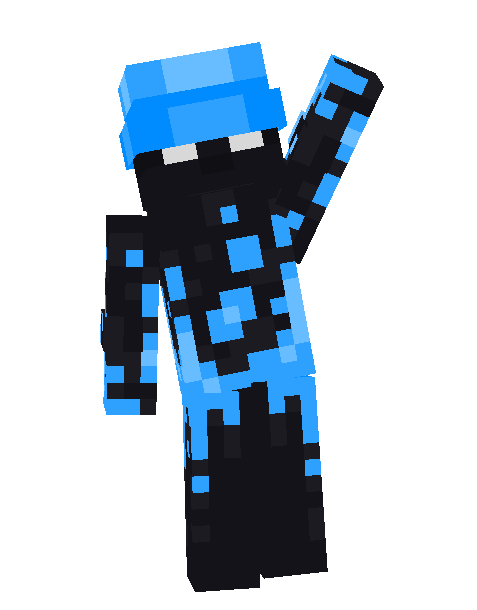

Learned Languages
1. HTML (Oktober 2021 - March 2022)
I started with HTML by seeing it in class. Then I started wondering around with making my own websites, my teacher kept motivating me to continue further on this. And that's what I did until I found CSS.
2. CSS (March 2022 - September 2022)
When I discovered CSS, I started making "cool" websites as I was thinking back then. I enjoyed the journey of CSS and making my own animations and designs. This was the second shortest period that I've ever spent "maining" a coding language.
3. Python (September 2022 - February 2023)
When my IT teacher teached us about python, it shocked me. Being able to use it almost anywhere made me want to learn it. So I did, I spent over 5 months learning the language. Until I quit it as I found more advanced languages.
4. Skript (Oktober 2022 - May 2024)
Skript was the fourth language I learned. I saw Skript as an opportunity to start out Minecraft developing. I was always into games and trying to make my own version of them, and then I started experimenting around. Which was when I started enjoying developing. Then I kept doing skript for 2 more years, making Skript the language I have most experience with.
5. Roblox LUA (June 2023 - July 2023)
As most of people have, I also played Roblox games. While doing that, I wanted to make my own version of some of the games. So that's what I did, dive into Roblox Studio and started grinding out tutorials to learn the language. I never gave up, then I started making Roblox games. And I quit as I stopped liking Roblox.
6. Java (March 2024 - Present)
I was always being made fun of of using Skript. That's why I decided to learn Java, especially for Minecraft Plugins. I started Java as a fun side quest to see if I liked it, and then I started making more advanced programs using the language as I enjoyed it so much. I still enjoy java to this day and am not going to give up on it any time soon.
Previous Experience
MineFlash - Administrator, Lead Developer (1500 Members)
"Danto is hard-working and altruistic. He is always helping out, even though he has not been asked to do so. He is reliable and dependable. If you ask him to do something he gets it done with a lot of heart and motivation. He does this work because he loves to be helpful and benefit others, hes not doing this for his own benefit, but for the community as a whole. Hes not looking for a promotion, hes looking for ways to be helpful and beneficial even if it creates a lot of work for himself. He is just a overall generous, kind-hearted, helpful, and a altruistic person." - AntVibez (MineFlash Owner)
BroKits - Moderator (1650 Members)
Brokits was a different type of experience, it was filled with hard-working and staff that love what they're doing. This made me fit in into the Staff Team, I enjoyed BroKits and the Staff Experience.
Modern Network - Developer & Administrator (250 Members)
Modern Network was the first server I got hired at, I didn't apply for the position. But instead was paid to handle the server development, And staffing services on the network!
© 2024 iiDanto. All rights reserved.